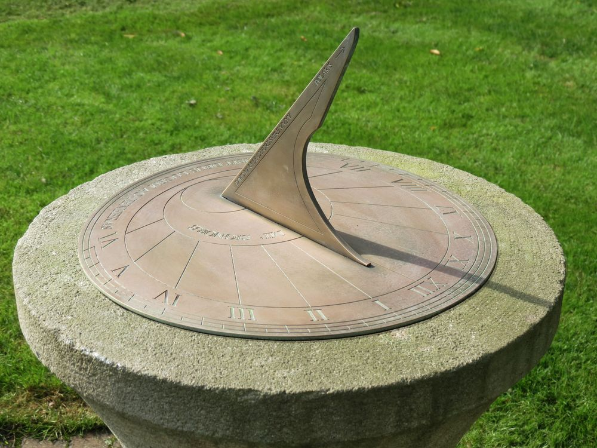
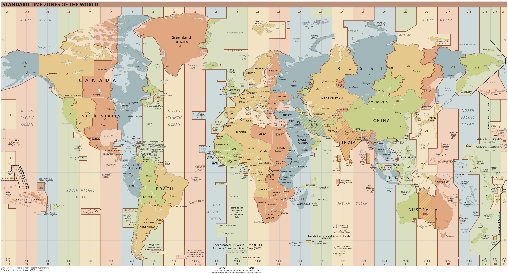

Time is a lie.
Brighton Ruby 2026 · @rhannequin

For most of human history,
the only clock was the sky.

Sir Isaac Newton
25 December 1642
4 January 1643
Rémy Hannequin
@rhannequin
Senior developer at
One reminder
“Remind me at 7am,
wherever I am.”
Lie № 1
A day is 24 hours
Time.zone = "Europe/London"
t = Time.zone.local(2026, 10, 25, 0, 30, 0)
# => Sun, 25 Oct 2026 00:30:00 BST +01:00
duration = 24 * 60 * 60
# => 86400
t + duration
# => Sun, 25 Oct 2026 23:30:00 GMT +00:00
t + 24.hours
# => Sun, 25 Oct 2026 23:30:00 GMT +00:00
On October 25, 2026, in London, a day is 90,000 seconds long.
Truth № 1
t + 1.day
# => Mon, 26 Oct 2026 00:30:00 GMT +00:00
Use the object that means what you want.
jan_31 = Time.zone.local(2026, 1, 31)
jan_31 + 1.month # => Sat, 28 Feb 2026
jan_31 + 2.months # => Tue, 31 Mar 2026
jan_31 + 30.days # => Mon, 02 Mar 2026
Lie № 2
Time zones are geography
Before 1840, every town set its clock by the Sun.
Bristol · 11:50
Brighton · 11:59
London · 12:00
Norwich · 12:05
Then we invented trains.
1847 · one railway time.

Then politics drew the lines.
We traded astronomical accuracy
for human convenience.
The IANA database is the receipt.
600+ zones · updated several times a year
tz = TZInfo::Timezone.get("America/Asuncion")
tz.utc_to_local(Time.utc(2025, 7, 1, 12, 0, 0))
2025-07-01 08:00:00
old tzinfo
2025-07-01 09:00:00
recent tzinfo
Truth № 2
Store IANA names.
Keep tzinfo current.
Lie № 3
Time is the same everywhere it runs
config.time_zone = "UTC"
Time.now # => 01:25:58 +0200
Time.current # => 23:25:58 UTC
Time.now.to_date # => 2026-06-25
Time.current.to_date # => 2026-06-24
Time.parse("2026-07-24 09:00:00")
# => 2026-07-24 09:00:00 +0200
Truth № 3
Time.now
→
Time.current
Time.parse
→
Time.zone.parse
Plain Ruby
→
Time.now.utc
Lie № 4
1:30 AM happens once

tz = TZInfo::Timezone.get("Europe/London")
tz.local_time(2026, 3, 29, 1, 30, 0)
tz.local_time(2026, 3, 29, 1, 30, 0)
# => TZInfo::PeriodNotFound
tz.local_time(2026, 10, 25, 1, 30, 0)
# => TZInfo::AmbiguousTime
Time.zone = "Europe/London"
Time.zone.parse("2026-03-29 01:30:00")
# => Sun, 29 Mar 2026 02:30:00 BST +01:00
Time.zone.parse("2026-10-25 01:30:00")
# => Sun, 25 Oct 2026 01:30:00 BST +01:00
TZInfo raises.
Time.zone.parse resolves silently.
Truth № 4
Twice a year, a clock time is missing or doubled.
Lie № 5
JSON and databases preserve your time
Time.zone = "UTC"
str = "2026-06-25 09:00:00+01:00"
Time.zone.parse(str).to_json
Time.zone = "UTC"
str = "2026-06-25 09:00:00+01:00"
Time.zone.parse(str).to_json
# => "2026-06-25T08:00:00.000Z"
Truth № 5
Outside Ruby objects, don't forget the zone.
No column type keeps your zone
PostgreSQL timestamptz · stored as UTC
MySQL DATETIME · ignores the zone
SQLite · no datetime type at all
Lie № 6
Noon is when the Sun is highest
In London, solar noon happens at:
Feb 11 · 12:14
Nov 3 · 11:44
One year of solar noons.
Truth № 6
Use Astronoby.
A day is not always 24 hours.
Dates don't always follow.
Time zones change under you.
Even the Sun and the Moon don't always rise.